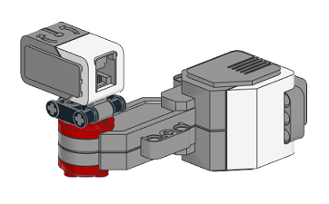
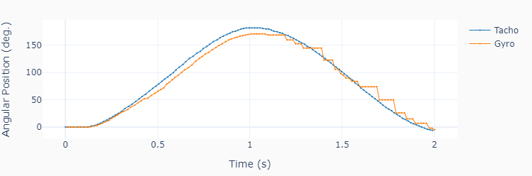
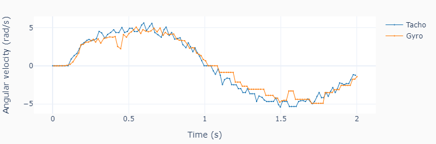

Gyro Data
This example code, shows how use the gyro to measure angular position and velocity by attaching it to the motor shaft.
  Note
1. Remember there’s a cable attached to the sensor, so limit the rotation angle to approx. 180 degrees.
2. The maximum angular speed that the gyro can detect without saturating is 440 deg./s (approx. 7.7 rad/s). Limit the motor speed output to no more than 35 %.
3. If you are getting a negative gyro reading, try attacing it to the other side of the motor shaft.
""" gyrodata.py
Run one motor with a sinusoidal speed input and an attached gyro.
Setup:
Connect one large motor to port 'A'
Connect the gyro sensor to port number 1.
"""
# Importing modules and classes
import time
import numpy as np
from scipy import integrate
from pyev3.utils import plot_line
from pyev3.brick import LegoEV3
from pyev3.devices import Gyro, Motor
# Defining parameters (for one motor)
T = 2 # Period of sine wave (s)
u0 = 30 # Motor speed amplitude (%)
tstop = 2 # Sine wave duration (s)
# Pre-allocating output arrays
tmotor = []
theta = []
tgyro = []
angle = []
rate = []
# Creating LEGO EV3 objects
ev3 = LegoEV3()
motor = Motor(ev3, port='A')
gyro = Gyro(ev3, portnum=1, inputmode='angle&rate')
# Initializing motor
motor.outputmode = 'speed'
motor.output = 0
motor.reset_angle()
motor.start()
# Getting initial gyro sensor reading to remove drift in the data
angle0, rate0 = gyro.output
# Initializing current time stamp and starting clock
tcurr = 0
tstart = time.perf_counter()
# Running motor sine wave output
while tcurr <= tstop:
# Getting current time for motor (s)
tcurr = time.perf_counter() - tstart
# Assigning current motor sinusoidal
# output using the current time stamp
motor.output = u0 * np.sin((2*np.pi/T) * tcurr)
# Updating output arrays for motor
tmotor.append(tcurr)
theta.append(motor.angle)
# Getting current time for gyro (s)
tcurr = time.perf_counter() - tstart
# Updating output arrays for gyro
# (and converting from deg/s to rad/s)
anglecurr, ratecurr = gyro.output
tgyro.append(tcurr)
angle.append(anglecurr-angle0)
rate.append(np.pi/180 * (ratecurr-rate0))
# Stopping motor and closing brick connection
motor.stop(brake='off')
ev3.close()
# Calculating motor angular velocity (rad/s)
w = np.pi/180 * np.gradient(theta, tmotor)
# Plotting results
plot_line([tmotor, tgyro], [theta, angle], yname='Angular Position (deg.)',
legend=['Tacho', 'Gyro'], marker=True)
plot_line([tmotor, tgyro], [w, rate], yname='Angular velocity (rad/s)',
legend=['Tacho', 'Gyro'], marker=True)